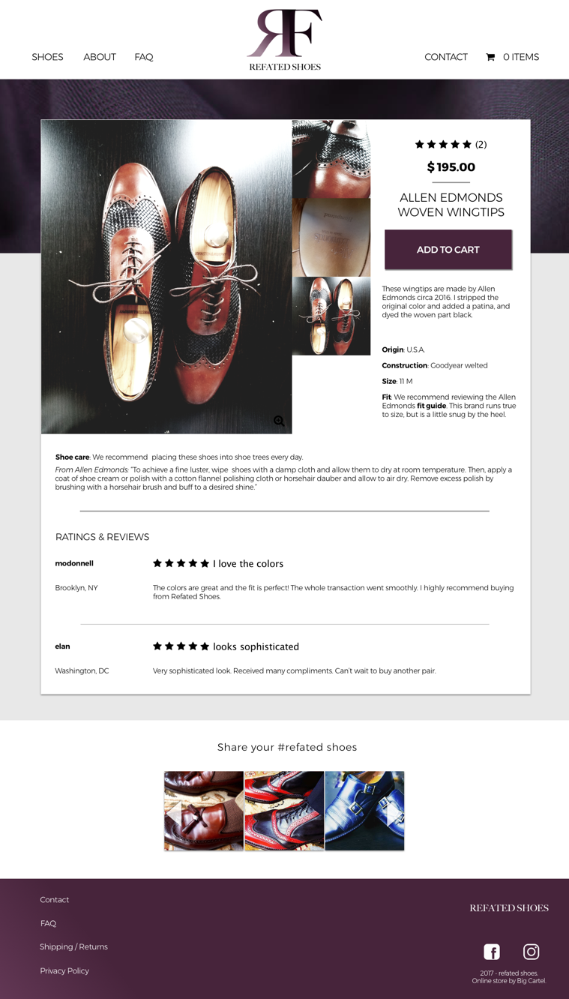
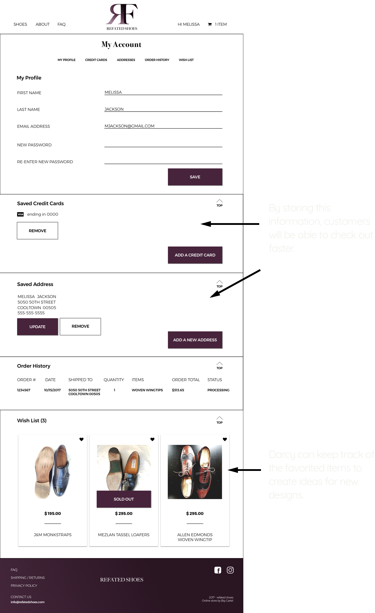

the story
The entrepreneur (Darcy) behind ReFated Shoes, or RFS, is an artist with impeccable style. Bored of the basic blacks and browns, he hand-painted his own shoes in vibrant hues, patina patterns, and however else inspiration took hold of his paint brush. To his surprise, colleagues and passersby were offering to buy the shoes off his feet. So, he decided to take his hobby online. After a successful stint on Etsy, he wanted to make it official with his own site.
With our foundation as an Etsy site, design-wise, we were starting from scratch. Below, I outline how we went from this Etsy site to what we have now.
<<<<<<< HEADproject goal
e-Commerce website
Brand identity
Business cards
dates
2017
project goal
e-Commerce website
Brand identity
Business cards
dates
2017

→

→
business organization
research
competitive landscape
Darcy named a few companies with a similar concept. So, we looked them over to see if we could idenfity any design similarities and key differences. We found that the companies that were just starting out use stone/slate textures and colors, while the more established companies rely on a black and white color scheme with brightly colored photos and calls-to-action.


stakeholder interview
Refated Shoes is a men’s shoe customization company with no intention of expanding beyond their current market. However, the hope is to offer personal customization within the next 5 years.
The owner, Darcy, is an artistic person who sees his product as art, rather than just shoes.
what words would you use to describe RFS?
"Fresh, cool, classic, and craftsmanship."
user research
Considering the distinct nature of this business: of painting second-hand, vintage, or out of season shoes, we needed a better understanding of how to market to the target customer. We also needed to identify the target customer.
survey 1
We asked 33 people about their shoe-buying preferences including whether they’d purchase refurbished shoes and their budget.
This first survey helped us define our target customer: out of the 87.5% of respondents who would pay between $100-$300 for a pair of shoes AND would purchase shoes online, 50% of them would consider buying refurbished shoes.
87.9%
mostly consider quality & style to purchase shoes
75.8%
would purchase shoes online
48%
would buy or consider buying refurbished shoes
survey 2 & 3
We surveyed 133 people to understand whether the term “refurbished” or the concept behind RFS turned customers away. It was the word. The third survey and preference tests examined different word usage. The final term we chose was hand-painted.
54.3%
would consider buying hand-dyed shoes
25.4%
would buy hand-dyed shoes
'used'
most resembled “refurbished”
Challenges
The word "refurbished"
Ambiguity behind the refurbishing process
Solutions
Replace "refurbished" with "hand-painted"
Show before / after pictures
Explain the process
who are they?
target customers
We had an idea of who the RFS target market is, but were able to better define them through our surveys.

who's vincent?
Vincent is a 23-36 year-old banker/consultant or entrepreneur. His goal is to find a unique & luxury shoe that will stand out.
ideal day?
"video games during the day, fancy food, then a night out getting smashed with friends."
who's jean?
Jean is a 50-75 years-old. His goal is to reflect his flamboyant personality onto his clothes.
ideal day?
"Going for a short trip somewhere, some walking, taking photographs, and finishing with a nice dinner & wine in a familiar restaurant."
information architecture
Mapping
We conducted a card sort to help organize the website and discover whether additional pages were needed. We learned that the potential customer wanted to learn more about the product, with multiple survey respondents suggesting a section devoted to hand-painting techniques.

Flows
Based on our user personas, we decided to target the Vincent’s and Marcus' through Instagram and Facebook, while the Jean's would learn through word-of-mouth. Accordingly, I designed the below user flow to reflect the journey the shopper will take once they click on that link.

sketching
iterations
I conducted multiple rounds of testing, remote and over Skype. Below, are some comments and iterations. Other notable mentions include being asked to include questions in the FAQ page rather than just the answers.
homepage
I had two main versions of the homepage, and ultimately decided on the second version. Here are the iterations:
version 1
version 2

frequently asked questions
The FAQ page went through two different iterations:


product details
"Could you add the shoe size to the description?" "What about including a before picture?"
During testing, users spent the most time on this page, reading through the details. They generally liked the layout, but brought up obvious concerns that I’ve added - as you can see in version 2. I also received a great comment that I left up to the entrepreneur: “What about including a before picture?" He, unfortunately, doesn’t have before photos for all of his shoes, but plans to take before photos from now on.


branding
Logo Formation
Logo Details
Colors


Typography

Buttons

Mockup

prototype
First, I'd like to share the final prototype. Then, I'll show you how we got there.
User Feedback
I conducted multiple rounds of user feedback
Positives
Nice, good looking products
Color and layout
Checkout process is standard
Functionality works well
"All the stuff you expect to see" on a retail site
Respondents understood what the site was selling
Suggestions
Highlight the process of the shoes more to show that it’s not your average retail site
"Why is there a quantity button if each shoe is unique?"
Add a way to remove something from the cart
Font size seems too large
Landing Page

About, Contact, FAQ


Purchasing Flow
- 


Membership
Darcy’s goal is to include membership services once he builds a larger following. So, we planned for the future and designed an account page.
what i learned
In retail, photography is just as important as the site design. To dispel concerns of condition and quality, the users requested more photos of the finished product as well as the painting process.
We discovered that customers want to learn about products prior to purchasing them. In the future, we will explore embedding videos on the website and social media platforms.